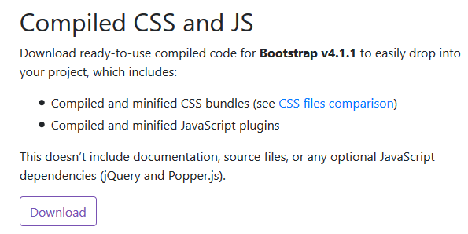

- Option #1 — Using a CDN
- Option #2 — Downloading the Bootstrap code locally
- Option #3 — Installing with NPM
2 versions of Bootstrap 4
- CSS only version - This is what you get with the CDN
- The Sass version - Sass is a Preprocesor that allows you to write dynamic CSS which compiles down to regualr CSS. It also allows you to make more customizations and choose which parts of the framework to include. This ultimately results in a reduced file size.
Different ways to install
Option #1 — Using a CDN
The advantage of a CDN is speed. Once a user has visited a website that uses a CDN, the Bootstrap code is saved to their browser's cache. This means that the when the user visits another website using the same CDN, it won't have to download the code again.
If you're developing, you must have an internet connection to use the CDN.
This imports the entire Bootstrap library which is usually unneccesary. This could result in longer load times.
Starter template example using CDN links
This template can be found at:
<!doctype html>
<html lang="en">
<head>
<!-- Required meta tags -->
<meta charset="utf-8">
<meta name="viewport" content="width=device-width, initial-scale=1, shrink-to-fit=no">
<!-- Bootstrap CSS -->
<link rel="stylesheet" href="https://maxcdn.bootstrapcdn.com/bootstrap/4.0.0/css/bootstrap.min.css" integrity="sha384-Gn5384xqQ1aoWXA+058RXPxPg6fy4IWvTNh0E263XmFcJlSAwiGgFAW/dAiS6JXm" crossorigin="anonymous">
<title>Hello, world!</title>
</head>
<body>
<div class="container">
<h1>Hello, world!</h1>
<!-- Optional JavaScript -->
<!-- jQuery first, then Popper.js, then Bootstrap JS -->
<script src="https://code.jquery.com/jquery-3.2.1.slim.min.js" integrity="sha384-KJ3o2DKtIkvYIK3UENzmM7KCkRr/rE9/Qpg6aAZGJwFDMVNA/GpGFF93hXpG5KkN" crossorigin="anonymous"></script>
<script src="https://cdnjs.cloudflare.com/ajax/libs/popper.js/1.12.9/umd/popper.min.js" integrity="sha384-ApNbgh9B+Y1QKtv3Rn7W3mgPxhU9K/ScQsAP7hUibX39j7fakFPskvXusvfa0b4Q" crossorigin="anonymous"></script>
<script src="https://maxcdn.bootstrapcdn.com/bootstrap/4.0.0/js/bootstrap.min.js" integrity="sha384-JZR6Spejh4U02d8jOt6vLEHfe/JQGiRRSQQxSfFWpi1MquVdAyjUar5+76PVCmYl" crossorigin="anonymous"></script>
</div><!--Close container-->
</body>
</html>
Option #2 — Downloading the Bootstrap code locally
You would download the pre compiled Bootstrap CSS and JavaScript files to your site.
If you're developing, this allows you the ability to work offline.
Click the Download button under 'Compiled CSS and JS'. This downloads a .zip file. When you extract, it contains a /css and /js folder.
The CSS folder
This folder contains several CSS files. You only need one of the following files:
- bootstrap.css
- bootstrap.min.css
List of CSS files
- bootstrap.css
- bootstrap.css.map
- bootstrap.min.css
- bootstrap.min.css.map
- bootstrap-grid.css
- bootstrap-grid.min.css
- bootstrap-grid.css.map
- bootstrap-grid.min.css.map
- bootstrap-reboot.css
- bootstrap-reboot.css.map
- bootstrap-reboot.min.css
- bootstrap-reboot.min.css.map
Further breakdown of the CSS files
Regular CSS files
- bootstrap.css
- bootstrap-grid.css
- bootstrap-reboot.css
Minified versions
- bootstrap.min.css
- bootstrap-grid.min.css
- bootstrap-reboot.min.css
Map files
These are files that are useful if you're using Bootstrap in development mode so that they could point you not to the CSS, but to the original SAS code that was used to create the CSS.
- bootstrap.css.map
- bootstrap.min.css.map
- bootstrap-grid.css.map
- bootstrap-grid.min.css.map
- bootstrap-reboot.css.map
- bootstrap-reboot.min.css.map
Reboot files
The reboot files are the special Bootstrap code that resets the CSS and browsers so that they work more consistently in different platforms.
- bootstrap-reboot.css
- bootstrap-reboot.css.map
- bootstrap-reboot.min.css
- bootstrap-reboot.min.css.map
The JS folder
This folder contains several JavaScript files. You only need one of the following files:
- bootstrap.js
- bootstrap.min.js
- bootstrap.bundle.js - This contains all the Bootstrap code plus an additional library called 'popper.js'.
List of JS files
- bootstrap.bundle.js
- bootstrap.bundle.js.map
- bootstrap.bundle.min.js
- bootstrap.js
- bootstrap.bundle.min.js.map
- bootstrap.js.map
- bootstrap.min.js
- bootstrap.min.js.map
Download jQuery
jQuery is required for Bootstrap to function. You can download it here:
Download Popper
This is necessary if you did NOT use the bootstrap.bundle.js file. You can download it here:
Example template for locally installed Bootstrap files
jQuery is required for Bootstrap to function. When you link the jquery and boostrap files, jQuery must come first since bootstrap depends on it.
<!doctype html> <html lang="en"> <head> <!-- Required meta tags --> <meta charset="utf-8"> <meta name="viewport" content="width=device-width, initial-scale=1, shrink-to-fit=no"> <meta http-equiv="x-ua-compatible" content="ie=edge"> <!-- Bootstrap CSS --> <link rel="stylesheet" href="css/bootstrap.min.css"> <title>Hello, world!</title> </head> <body> <div class="container"> <h1>Hello, world!</h1> </div><!--Close container--> <!-- Optional JavaScript --> <!-- jQuery first, then Popper.js, then Bootstrap JS --> <script src="js/jquery.slim.min.js"></script> <script src="js/popper.min.js"></script> <script src="js/bootstrap.min.js"></script> <!-- add any custom JS script after here --> </body> </html>
Option #3 — Installing with NPM
- First, install Node.js on your system.
- Next, run the following.
$ npm init - Click ENTER for all questions when prompted.
- A package.json file is created with the following contents:
{ "name": "gamelayout", "version": "1.0.0", "description": "", "main": "index.js", "scripts": { "test": "echo \"Error: no test specified\" && exit 1" }, "author": "", "license": "ISC" }
This creates a package.json file which is a configuration for your project. When you install Bootstrap, it will add a package name and version to this file.
You can use this package.json file to install everything on another system.
Downloading Bootstrap using npm
- View the following link for info on downloading Bootstrap via npm.
- Run the following to install Bootstrap. --save saves it as a dependency in your package.json file.
$ npm install bootstrap --save npm notice created a lockfile as package-lock.json. You should commit this file. npm WARN bootstrap@4.1.1 requires a peer of jquery@1.9.1 - 3 but none is installed. You must install peer dependencies yourself. npm WARN bootstrap@4.1.1 requires a peer of popper.js@^1.14.3 but none is installed. You must install peer dependencies yourself. npm WARN gamelayout@1.0.0 No description npm WARN gamelayout@1.0.0 No repository field. + bootstrap@4.1.1 added 1 package in 1.531s - This command did the following:
- Created a /node_modules folder:
- /bootstrap
- /bootstrap/dist
- /bootstrap/js
- /bootstrap/LICENSE
- /bootstrap/package.json
- /bootstrap/README.md
- /bootstrap/scss
- Created a /node_modules folder:
- Added the following to the package.json file
{ "name": "gamelayout", "version": "1.0.0", "description": "", "main": "index.js", "scripts": { "test": "echo \"Error: no test specified\" && exit 1" }, "author": "", "license": "ISC", "dependencies": { "bootstrap": "^4.1.1" } } - Created a package-lock.json file with the following contents
{ "name": "gamelayout", "version": "1.0.0", "lockfileVersion": 1, "requires": true, "dependencies": { "bootstrap": { "version": "4.1.1", "resolved": "https://registry.npmjs.org/bootstrap/-/bootstrap-4.1.1.tgz", "integrity": "sha512-SpiDSOcbg4J/PjVSt4ny5eY6j74VbVSjROY4Fb/WIUXBV9cnb5luyR4KnPvNoXuGnBK1T+nJIWqRsvU3yP8Mcg==" } } } - Note how in step#2, there were two dependency warnings.
npm WARN bootstrap@4.1.1 requires a peer of jquery@1.9.1 - 3 but none is installed. You must install peer dependencies yourself. npm WARN bootstrap@4.1.1 requires a peer of popper.js@^1.14.3 but none is installed. You must install peer dependencies yourself.
- Install these by running the following:
$ npm install jquery@1.9.1 --save $ npm install popper.js@^1.14.3 --save
- These commands added the following to your package.json file:
{ "name": "gamelayout", "version": "1.0.0", "description": "", "main": "index.js", "scripts": { "test": "echo \"Error: no test specified\" && exit 1" }, "author": "", "license": "ISC", "dependencies": { "bootstrap": "^4.1.1", "jquery": "^1.9.1", "popper.js": "^1.14.3" } }